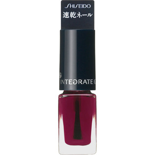

返回列表
产品名称：インテグレート グレイシィ ネールカラー

資生堂 インテグレート グレイシィ ネールカラー ９２
メーカー 資生堂
JANコード 4901872328567
商品の特徴
指先・手肌まで美しく印象づける速乾ネールカラー
二度塗りしてもすばやく乾き、つややかでクリアな発色。液の広がりがよく、手早く塗れてスジムラなし。つけたての美しさが長く続きます。
植物性天然成分配合
成分・分量
-
用法及び用量
＜使用方法＞
○瓶口で筆の片側をしごき、もう片側の液が残った部分で爪に塗布します。